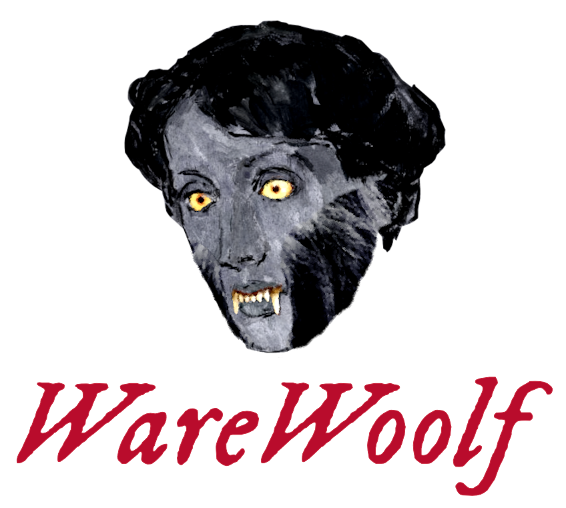
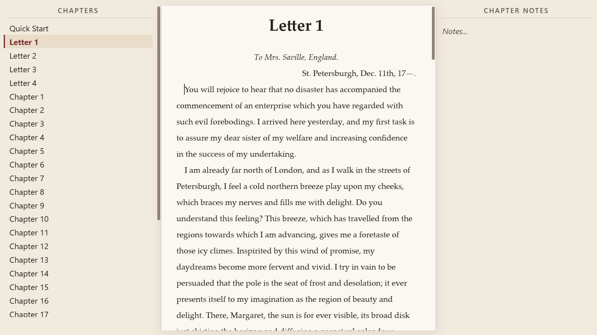
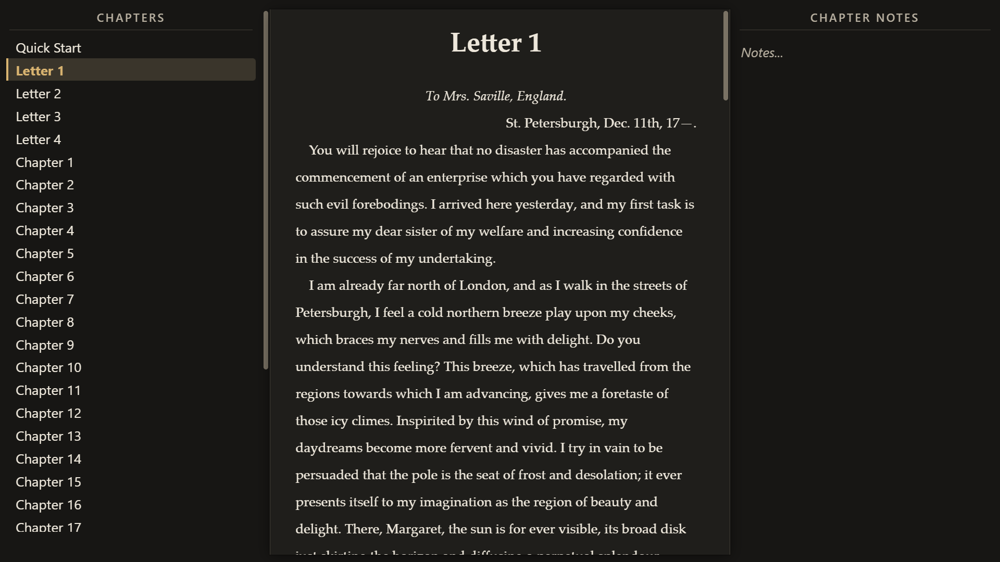
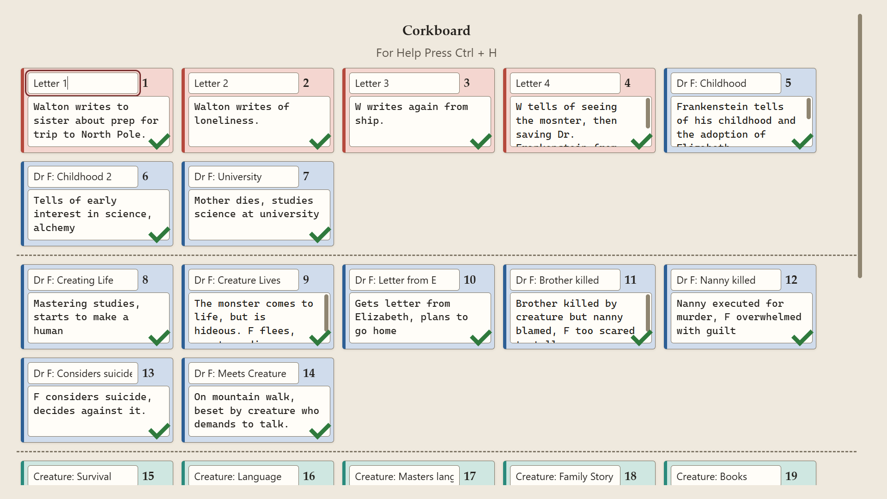

⌘All-keyboard navigation
Designed to be pleasant with no mouse at all. Panels, chapters, dialogs and menus all answer to the keyboard, and every control is labeled for screen readers.

A simple novel writing system designed to be usable without a mouse.
Three text panels. No toolbar. No icons. Not even a menu until you press Alt. Everything you need to organize, draft, and revise a book, and nothing that gets in the way of writing it.
Free and open source under the MIT license. Windows, macOS, Debian Linux, and Raspberry Pi.


“The only writing software I use.” — Virginia Woolf
Intentionally simplified
Beyond a typeface for the manuscript, another for the sidebars, and light or dark, there is nothing to fiddle with. No colors, no styles, no twenty-button toolbar. Each panel toggles off at a keypress, so you can write with only your manuscript on screen.
What it does have
Fiction doesn’t take much formatting. WareWoolf gives you exactly that much and puts the rest of its effort into the parts of writing a book that are actually hard.
Designed to be pleasant with no mouse at all. Panels, chapters, dialogs and menus all answer to the keyboard, and every control is labeled for screen readers.
Bold, italics, underline, strikethrough, four heading levels, alignment, lists, blockquotes and footnotes. Nothing else, and none of it on a toolbar.
Move a chapter up or down the list with a keystroke and let WareWoolf renumber the headings for you: Chapter One, Chapter Two, and on.
Keep notes on every chapter and on the project as a whole. A Reference section holds character lists and world-building that stay out of the compile and the word count.
Total, chapter, and session counts, plus a goal with a progress bar that shows how close the draft is to done.
Run it after you write. No red squiggles, no grammar advice. Check against any number of dictionaries at once, import your own, and keep a per-project word list for names.
Curly quotes, an em dash from two hyphens, an ellipsis from three periods, as you type. Undo any one of them, switch it off, or apply it to an old manuscript in one pass.
Email a chapter or the whole manuscript to yourself at the press of a button. The simplest backup there is, and it works from a device with no other software on it.
Every shortcut can be changed in the Shortcut Helper, and your choices are remembered. Restore the defaults whenever you like.

Plan the book
Pin a card for every chapter, give it a color, write the synopsis, tick it off when it’s drafted. Draw a line where an act ends. The whole board saves as one Markdown file that doubles as your outline, readable in anything.
Bring a draft in, send a manuscript out
Paste in a plain-text draft and let WareWoolf turn it into a proper manuscript: it can read a simplified Markdown, interpret your own markers for italics and headings, and split the text into chapters at a heading or a custom break string.
Every chapter is its own .txt file with light Markdown-style formatting. If WareWoolf vanished tomorrow you could still open, read, and edit your book in any text editor. It is the most archival format there is, and people will still be able to open it in a hundred years.
Because each chapter loads only when you work on it, a very long novel never slows the app down, even on a Raspberry Pi. Auto-save and auto-backup are built in.
Built for writerDecks
A writerDeck is a standalone writing device: a Raspberry Pi and a mechanical keyboard, an old laptop, whatever you have. WareWoolf is designed to be the only program on it, so it carries the small pieces of an operating system a writer still needs.
Nothing to memorize
The Shortcut Helper lists every command and lets you rebind any of them to the keys you prefer. A few of the things you’ll reach for most:
Defaults shown, with Cmd in place of Ctrl on a Mac. Rebind anything in the Helper and WareWoolf remembers.
Get WareWoolf
Binaries for every platform are on the releases page. The app can check for updates itself once installed.
An installer that puts WareWoolf in the Start Menu and updates in place, or a portable zip you unzip and run from a USB stick or a locked-down machine. Nothing is written outside the folder but your settings.
Installer or portableA mainline build for macOS 13 Ventura and newer. On an older Mac, from Catalina through Monterey, take the Legacy build instead. It is the same WareWoolf from the same source.
Download .dmgDebian packages for AMD64 and for ARM64, which is what a Raspberry Pi needs. The Wi-Fi manager uses NetworkManager, which Raspberry Pi OS leaves off by default.
Download .debPrefer to build it yourself? WareWoolf is an Electron Forge app. With Node.js installed, run npm install and then npm start in the source directory, or npm run make to produce a binary for your platform. Full instructions are in the README.